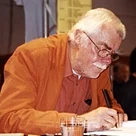

ZETA was an early experiment in fusion power research. Built at the Atomic Energy Research Establishment in England, it was much larger and more powerful than any other fusion machine at that time. It went into operation in August 1957, and by the end of the month was giving off bursts of about a million neutrons per pulse. Measurements suggested temperatures between 1 and 5 million kelvins, hot enough to produce nuclear fusion reactions
Did you know...

... that the poet, cartoonist, and satirist F. W. Bernstein (pictured) was professor of caricature and comics in Berlin, the only such chair in the world?
... that tropical cyclones may have induced past climate changes and could still be causing El Niño type events today?
... that Simon Kaloa Kaʻai, a former jailer, became a noble and cabinet minister to a king?
... that an 1832 auction of the contents of Cullands Grove included three hundred and seventy cases of wine, two Shetland ponies, a fire engine, and two "humane" man traps?
In the news
More than a hundred Afghan National Security Forces members are reportedly killed in an attack on a military compound in Maidan Shar.
Ten Chadian United Nations peacekeepers are killed in an attack by al-Qaeda in Mali in apparent retaliation for the normalisation of diplomatic relations between Chad and Israel retaliation for the normalisation of diplomatic relations between Chad and Israel
On this day
January 25: Feast day of Gregory of Nazianzus (Eastern Orthodox Church); Tatiana Day in Russia
1573 – Sengoku period: The forces of Takeda Shingen defeated those of Tokugawa Ieyasu at the Battle of Mikatagahara (pictured), north of Hamamatsu, Mikawa Province, Japan
1704 – English colonists from the Province of Carolina and their native allies began a series of raids against a largely peaceful population of Apalachee in Spanish Florida.
1949 – The Academy of Television Arts & Sciences presented the first Emmy Awards to honor excellence in the American television industry.